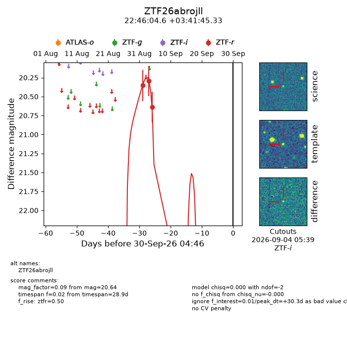
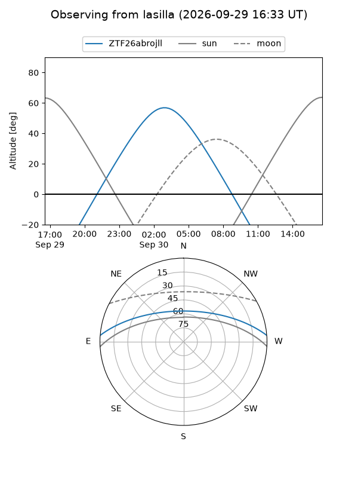
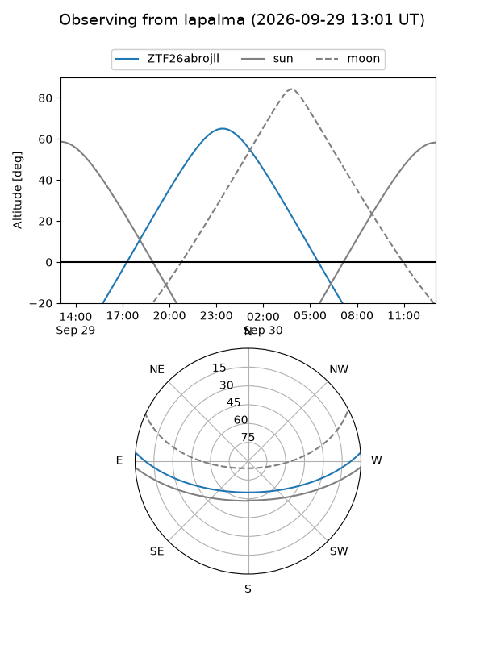
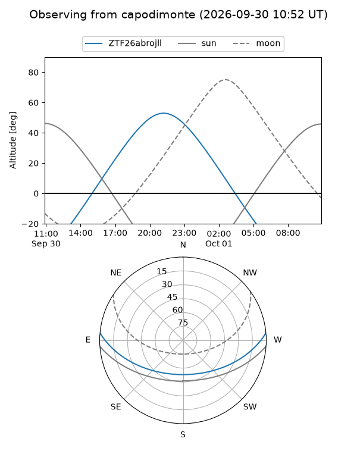
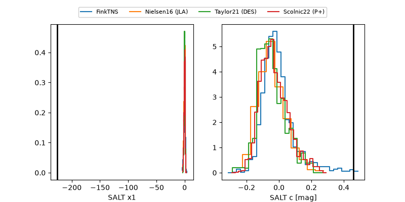

ZTF26abrojll
Target ZTF26abrojll at 2026-09-30 14:38
Aliases and brokers:
FINK-ZTF: ztf.fink-portal.org/ZTF26abrojll
Lasair-ZTF: lasair-ztf.lsst.ac.uk/objects/ZTF26abrojll
ALeRCE-ZTF: alerce.online/object/ZTF26abrojll
Direct TNS query: direct search
alt names
ZTF26abrojll (ztf,fink_ztf)
Coordinates:
equatorial (ra, dec) = 341.5192,+3.69593
equatorial (HMS+DMS) = 22:46:04.61,+03:41:45.33
galactic (l, b) = (73.6046,-46.81590)
Flags:
peak dt: +30.7
Photometry:
last ztfr=20.64
3 ztfr detections
Lightcurve

Visibility



Additional plots
